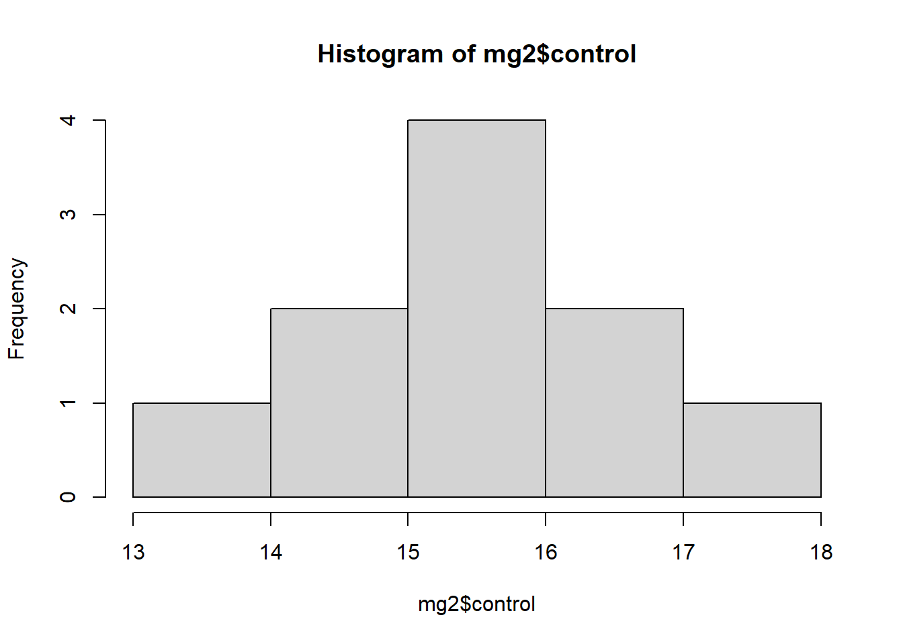

Diferentemente da estatística descritiva, a estatística inferencial dedica-se à extrapolação de conclusões acerca de uma população maior, baseando-se em uma amostra de dados.
Este ramo utiliza métodos estatísticos para testar hipóteses e estimar parâmetros, possibilitando inferências sobre características da população a partir da análise de amostras.
Testes de Hipóteses: Os testes de hipóteses são procedimentos que permitem tomar decisões sobre a população com base em amostras de dados. Utilizam-se para determinar se um resultado observado em dados de amostra pode ser atribuído ao acaso ou se é estatisticamente significativo.
P-Valor (Valor de Probabilidade): O valor de p é uma medida que indica a probabilidade de observar os resultados encontrados, ou resultados mais extremos, sob a suposição de que a hipótese nula é verdadeira. Valores de p baixos (tipicamente menor que 0,05) sugerem que é improvável obter tais resultados por acaso, levando à rejeição da hipótese nula.
A principal diferença entre a estatística descritiva e estatística inferencial mais notável entre estes dois ramos reside na abordagem dos dados: enquanto a Estatística Descritiva concentra-se na descrição e síntese das características dos dados coletados, a Estatística Inferencial ocupa-se com a generalização dessas observações para populações maiores, permitindo a formulação de inferências e previsões.
Premissas
Todos os testes estatísticos têm premissas de base que precisam ser atendidas para que o teste forneça resultados válidos em relação ao parâmetro que está sendo calculado. Os testes estatísticos devem atender às premissas de normalidade e homocedasticidade.
Normalidade: A distribuição do conjunto de dados segue uma distribuição normal. Caso essa premissa não seja atendida, os dados devem ser trabalhados com testes não-paramétricos. A normalidade em testes estatísticos entre dois grupos pode ser calculada através do Shapiro-test.
Homocedasticidade: as variâncias entre os dois grupos estudados são homogêneas, ou seja, similares. Essa premissa pode ser calculada por teste de variância.
Important
A premissa da homocedasticidade tem maior peso que a premissa da normalidade. Portanto, não se deve trabalhar com dados com variâncias heterogêneas.
Teste-t
O teste t-Student, ou simplesmente teste-t, é o método mais utilizado para se avaliar as diferenças entre as médias entre dois grupos. É um teste de hipótese que usa conceitos estatísticos para rejeitar ou não uma hipótese nula quando a estatística de teste (t) segue uma distribuição t de Student.
As hipóteses formuladas em um teste-t comparam as médias entre dois grupos, podendo estas serem dependentes ou independentes.
Hipótese nula (Ho): a média do grupo 1 é igual a média do grupo 2
Hipótese alternativa (Ha): a média do grupo 1 é diferente da média do grupo 2
Tendo formulado as hipóteses, o teste-t irá calcular o valor de t e vai aplicá-lo à função densidade de probabilidade da distribuição t de Student medindo o tamanho da área abaixo dessa função para valores maiores ou iguais a t. Essa área representa a probabilidade da média dessa(s) amostra(s) em questão ter(em) apresentado o(s) valor(es) observado(s) ou algo mais extremo. Se a probabilidade desse resultado ter ocorrido for muito pequena, podemos concluir que o resultado observado é estatisticamente relevante. Essa probabilidade também é chamada de p-valor ou valor p.
Caso o nível de significância do p-valor for de 5% e a área abaixo da função densidade de probabilidade da distribuição t de Student seja menor do que 5%, pode-se afirmar que a hipótese nula é rejeitada com nível de confiança de 95%.
Note que não rejeitar a hipótese nula não é a mesma coisa que afirmar que a hipótese alternativa é válida com o mesmo nível de confiança. Isso seria uma interpretação incorreta do teste.
Teste de Hipótese entre dois grupos independentes
Dois grupos independentes podem ser formados de duas maneiras distintas: extraindo-se uma amostra da população A e outra amostra da população B; ou indivíduos da mesma população foram alocados aleatoriamente a um dos dois tratamentos em estudo.
Um exemplo típico de duas amostras independentes é quando temos um grupo experimental e um grupo controle.
Importação de dados
O conjunto de dados foi importado do Google Sheet usando a função gsheet2tbl() do pacote gsheet. Nesse conjunto existem dois grupos independentes: um grupo de plantas em que foi aplicado Mg2 e um grupo de plantas controle (sem aplicação).
# A tibble: 20 × 3
trat rep comp
<chr> <dbl> <dbl>
1 Mg2 1 9
2 Mg2 2 12.5
3 Mg2 3 10
4 Mg2 4 8
5 Mg2 5 13.2
6 Mg2 6 11
7 Mg2 7 10.8
8 Mg2 8 9.5
9 Mg2 9 10.8
10 Mg2 10 10.4
11 control 1 13.7
12 control 2 15.9
13 control 3 15.7
14 control 4 14.2
15 control 5 15.9
16 control 6 16.5
17 control 7 18
18 control 8 14.4
19 control 9 16.4
20 control 10 16
Podemos observar que o conjunto de dados está no formato longo. Para o teste-t, é preciso que os dados estejam no formato largo, portanto eles serão transformados através da função pivot_wider().
O conjunto de dados pode ser visualizado por meio de um boxplot, criado através da função ggplot() juntamente a geom_boxplot().
mg |>ggplot(aes(trat, comp))+geom_boxplot()
Através do boxplot é possível assumir visualmente que os grupos seguem uma distribuição normal (pela simetria do boxplot formado) e que possuem variância homogênea (a estrutura dos dois boxplot são similares), mas os testes de premissas ainda devem ser feitos para confirmar.
Teste de premissas
Para avaliar se o conjunto de dados segue uma distribuição normal, é preciso ser feito o Shapiro-test para cada um dos grupos. Esse teste pode ser realizada usando a função shapiro.test(). A função hist() também pode ser utilizada para observar visualmente se a distribuição dos dados é normal ou não.
Como qualquer outro teste estatístico, o Shapiro-test também formula hipótese nula e alternativa. A Hipótese nula (Ho) é que a distribuição do conjunto de dados segue uma distribuição normal, enquanto que a Hipótese alternativa (Ha) diz que a distribuição dos dados não segue uma distribuição normal.
shapiro.test(mg2$control)
Shapiro-Wilk normality test
data: mg2$control
W = 0.93886, p-value = 0.5404
hist(mg2$control)

shapiro.test(mg2$Mg2)
Shapiro-Wilk normality test
data: mg2$Mg2
W = 0.97269, p-value = 0.9146
hist(mg2$Mg2)
Observa-se que em ambos os grupos o p-valor é superior ao nível de significância de 5%, portanto não se rejeita a hipótese nula e a distribuição pode ser considerada normal.
Outra forma visual de verificar a normalidade dos dados do grupo é através das funções qqnorm() e qqline(). Conforme os pontos são mais próximos à reta, mais os dados seguem a normalidade.
qqnorm(mg2$control)qqline(mg2$control)
qqnorm(mg2$Mg2)qqline(mg2$Mg2)
Para verificar se as variâncias dos dois grupos são homogêneas, pode ser utilizado a função var.test(). Do mesmo modo, a Hipótese nula (Ho) diz que as variâncias entre os dois grupos são homogêneas, enquanto que a Hipótese alternativa (Ha) diz que as variâncias não são homogêneas.
var.test(mg2$control, mg2$Mg2)
F test to compare two variances
data: mg2$control and mg2$Mg2
F = 0.67654, num df = 9, denom df = 9, p-value = 0.5698
alternative hypothesis: true ratio of variances is not equal to 1
95 percent confidence interval:
0.1680428 2.7237436
sample estimates:
ratio of variances
0.6765394
O p-valor foi maior que o nível de significância (5%), portanto não se rejeita a hipótese nula que as variâncias são homogêneas.
Teste de Hipótese
Visto que as premissas foram atendidas, o próximo passo é o teste de hipótese propriamente dito. O teste-t é executado através da função t.test(), no qual devem ser especificados os dois grupos que serão analisados.
teste1 <-t.test(mg2$Mg2, mg2$control)teste1
Welch Two Sample t-test
data: mg2$Mg2 and mg2$control
t = -8.1549, df = 17.354, p-value = 2.423e-07
alternative hypothesis: true difference in means is not equal to 0
95 percent confidence interval:
-6.490393 -3.825607
sample estimates:
mean of x mean of y
10.520 15.678
Observa-se que o p-valor foi muito inferior ao nível de significância de 5%, rejeitando a hipótese nula de que as médias entre os dois grupos são iguais. Logo, pode-se concluir que os dois grupos diferem estatisticamente um do outro.
Caso as variâncias entre os dois grupos fossem heterogêneas, poderia ser adicionado o argumento var.equal = FALSE no teste-t.
Usando a função report() do pacote report, um resumo da análise é montada automaticamente.
library(report)report(teste1)
Effect sizes were labelled following Cohen's (1988) recommendations.
The Welch Two Sample t-test testing the difference between mg2$Mg2 and
mg2$control (mean of x = 10.52, mean of y = 15.68) suggests that the effect is
negative, statistically significant, and large (difference = -5.16, 95% CI
[-6.49, -3.83], t(17.35) = -8.15, p < .001; Cohen's d = -3.65, 95% CI [-5.12,
-2.14])
Teste de Hipótese entre dois grupos dependentes
Dois grupos são considerados dependentes quando as observações em um grupo estão relacionadas de alguma forma às observações no outro grupo, ou seja, as amostras são provenientes dos mesmos indivíduos.
Isso é muito comum para medições repetidas no mesmo grupo de sujeitos, ou seja, quando o mesmo grupo de sujeitos é medido em diferentes momentos ou sob diferentes condições.
Importação dos dados
O conjunto de dados foi importado do Google Sheet usando a função gsheet2tbl() do pacote gsheet. Nesse conjunto existem dois grupos dependentes: avaliações realizadas sem ajuda de um instrumento e avaliações realizadas com ajuda de um instrumento sobre o mesmo conjunto de indivíduos.
Apenas pelo gráfico é possível observar que a estutura dos dois grupos é diferente um do outro, podendo indicar variâncias heterogêneas.
Teste de premissas
Foi usada a função shapiro.test() para cada grupo para determinar se eles seguem normalidade ou não.
shapiro.test(escala2$Unaided)
Shapiro-Wilk normality test
data: escala2$Unaided
W = 0.7748, p-value = 0.007155
shapiro.test(escala2$Aided1)
Shapiro-Wilk normality test
data: escala2$Aided1
W = 0.92852, p-value = 0.4335
#Em ambos os testes de normalidade, não rejeitamos a hipótese nula --> tem distribuição normal
Em ambos os testes, o p-valor foi inferior ao nível de significância, indicando que a hipótese nula deve ser rejeitada e que os conjuntos de dados não seguem uma distribuição normal.
Em seguida foi realizado o teste de variância pela função var.test().
var.test(escala2$Unaided, escala2$Aided1)
F test to compare two variances
data: escala2$Unaided and escala2$Aided1
F = 20.978, num df = 9, denom df = 9, p-value = 0.000106
alternative hypothesis: true ratio of variances is not equal to 1
95 percent confidence interval:
5.210754 84.459185
sample estimates:
ratio of variances
20.97847
Novamente o p-valor foi inferior a 5%, indicando que as variâncias são heterogêneas.
Teste de Hipótese
Para este caso de conjunto de dados onde os dois grupos são dependentes e apresentam variâncias heterogêneas, o teste-t é realizado com a função t.test() usando os argumentos paired = TRUE e var.equal = FALSE.
Paired t-test
data: escala2$Aided1 and escala2$Unaided
t = 4.4214, df = 9, p-value = 0.001668
alternative hypothesis: true mean difference is not equal to 0
95 percent confidence interval:
0.1147647 0.3552353
sample estimates:
mean difference
0.235
Como o p-valor foi inferior ao nível de significância, rejeitamos a hipótese nula de que os dois grupos são iguais.
Teste não paramétrico
Os testes não-paramétricos são utilizados quando o conjunto de dados experimentados não segue uma distribuição normal. Dessa forma é necessário aplicar outros testes estatísticos para analisar dois grupos.
Os testes de Mann-Whitney e de Wilcoxon podem ser usados substituindo o teste-t para análises não-paramétricos de apenas 2 grupos, sendo que o teste de Mann-Whitney é usado para 2 grupos independentes e o teste de Wilcoxon para dois grupos dependentes.
Teste de premissas
Usando o mesmo conjunto de dados da análise anterior, observa-se que nem a premissa de normalidade e nem a premissa de homocedasticidade foram atendidas.
shapiro.test(escala2$Unaided)
Shapiro-Wilk normality test
data: escala2$Unaided
W = 0.7748, p-value = 0.007155
shapiro.test(escala2$Aided1)
Shapiro-Wilk normality test
data: escala2$Aided1
W = 0.92852, p-value = 0.4335
var.test(escala2$Aided1, escala2$Unaided)
F test to compare two variances
data: escala2$Aided1 and escala2$Unaided
F = 0.047668, num df = 9, denom df = 9, p-value = 0.000106
alternative hypothesis: true ratio of variances is not equal to 1
95 percent confidence interval:
0.01184004 0.19191079
sample estimates:
ratio of variances
0.04766793
Teste de Hipótese
Como o conjunto de dados não apresenta uma distribuição normal, não tem variâncias homogêneas e envolve dois grupos dependentes, será aplicado o teste de Wilcoxon através da função wilcox.test(), usando o argumento paired = TRUE.
Wilcoxon signed rank test with continuity correction
data: escala2$Aided1 and escala2$Unaided
V = 55, p-value = 0.005889
alternative hypothesis: true location shift is not equal to 0
Observa-se que o p-valor é inferior ao nível de significância, indicando que a hipótese nula de que os dois grupos são iguais é rejeitada.